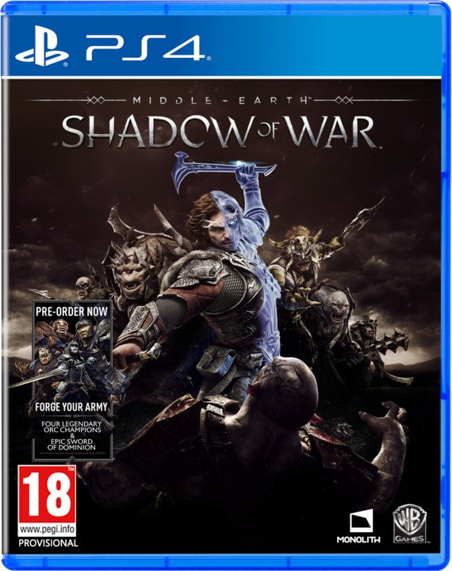
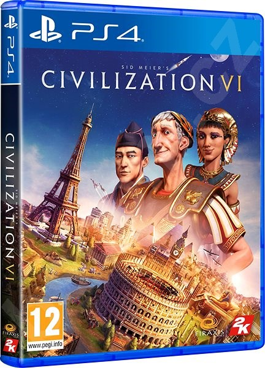
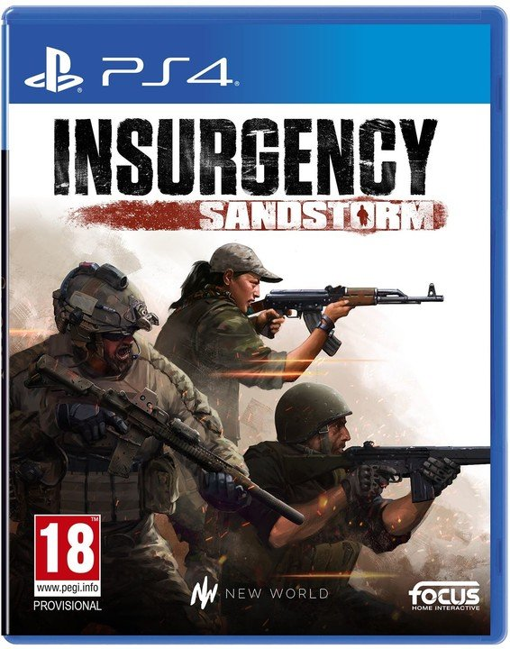
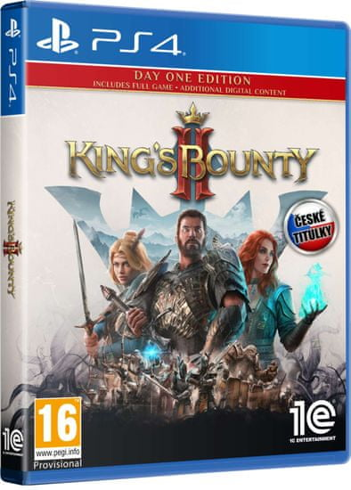
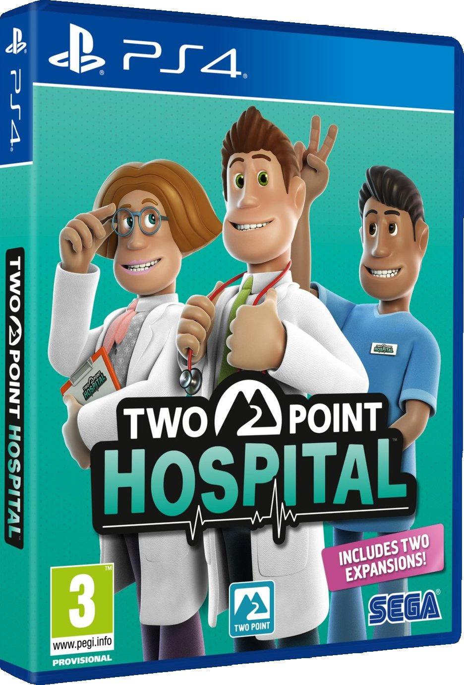
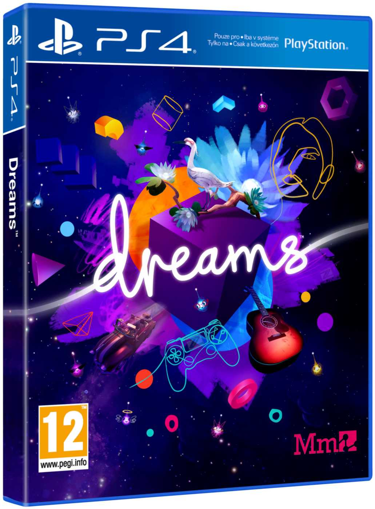
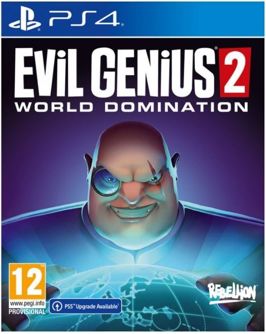
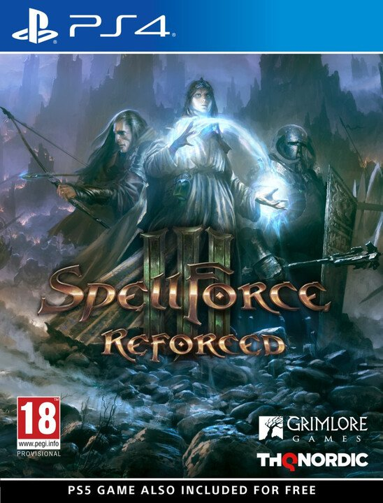
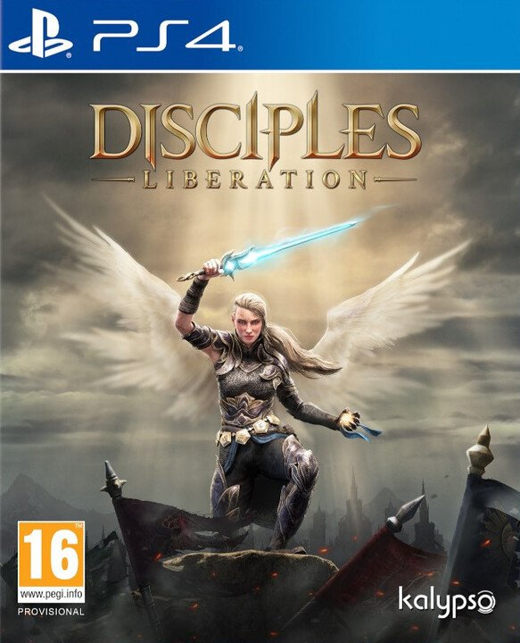

Strategická videohra nebo též strategie (anglicky strategy video game) je videoherní žánr, u kterého ovládáme větší skupinu objektů a manipulujeme s nimi po hrací ploše tak, abychom utrpěli co nejmenší újmu na vitalitě, bojeschopnosti, údržbě objektů, zdrojů, území, jednotek, sil...
Vývojář: Monolith Productions
Datum vydání: 20. dubna 2018
Hodnocení: 7/10
České titulky: ne

O hře: Příběh navazuje na události prvního dílu, kdy je Talion stále spojen s duchem elfa Celebrimbora, který ukoval prsten moci. Po spravedlivé pomstě za smrt svých milovaných je ale načase vyrazit osvobodit i celý Mordor a s ním i Středozem, takže dvojice vyrazí ukovat zcela nový prsten moci.
Vývojář: Aspyr
Datum vydání: 21. října 2016
Hodnocení: 6/10
České titulky: ne

O hře: Civilization VI je historická strategická hra s jedním cílem: vybudovat říši, která obstojí ve zkoušce času. Objevte nové země, zkoumejte technologie, dobývejte nepřátele a utkejte se s nejznámějšími historickými vůdci, zatímco povedete svou civilizaci od kamenů po rakety.
Vývojář: New World Interactive
Datum vydání: 12. prosince 2018
Hodnocení: 6/10
České titulky: ano

O hře: Pokračování slavné realistické střílečky Insurgency, jež má na svědomí společnost New World Interactive, před pár dny dorazilo na náš pevný disk. Jak na nás zapůsobila jeho finální verze, v čem se liší od hry, která nám byla prezentována v betě a řadu dalších informací si máte možnost přečíst v recenzi Insurgency: Sandstorm.
Vývojář: 1C Publishing EU
Datum vydání: 24. srpna 2021
Hodnocení: 5/10
České titulky: ano

O hře: King’s Bounty 2 nás zavede do světa Nostrie a v kůži jedné ze tří postav, kterou si zvolíme na začátku, zažijeme klasický příběh, kdy se obyčejný hrdina, tedy vaše maličkost, pokusím zachránit svět před dávným proroctvím a před samotnou temnotou, která se snaží zahubit všechno, co jí přijde do cesty.
Vývojář: Two Point Studios
Datum vydání: 30. srpna 2018
Hodnocení: 8/10
České titulky: ne

O hře: Two Point Hospital jede na stejných kolejích jako její předchůdce Theme Hospital. Úkolem hráče je vybudovat dostatečně sofistikovanou nemocnici s cílem vyšetřit (a pokud možno i vyléčit) všechny příchozí pacienty.
Vývojář: Media Molecule
Datum vydání: 14. února 2020
Hodnocení: 9/10
České titulky: ne

O hře: Dreams je hra neboli projekt, ve kterém tvoříte hry.
Vývojář: Rebellion Developments
Datum vydání: 30. března 2021
Hodnocení: 6/10
České titulky: ne

O hře: Ve hře Evil Genius 2 má hráč za úkol postavit zločinecké doupě na tropickém ostrově, aby mohl tajně sestavit zařízení pro soudný den a zároveň provozovat kasino jako kryt. [3] Hráči musí postavit různé místnosti, infrastrukturu a vybavení, aby podpořili provoz základny a odemkli nové operace, a nastražili pasti, které zabíjejí pronikající agenty a udržují obranu základny.
Vývojář: THQ Nordic
Datum vydání: 7. prosince 2017
Hodnocení: 8/10
České titulky: ne

O hře: SpellForce III vypráví o tom, jak může takový stín krutého fanatika ovlivnit myšlení lidí na celé dekády. Mágové jsou nyní psanci, rozhořely se čarodějnické procesy a kdokoli, kdo jen trochu přičichl k magii, se musí mít na pozoru před inkvizicí a jejím „očistným“ světlem.
Vývojář: Frima Studio
Datum vydání: 1. října 2021
Hodnocení: 7/10
České titulky: ne

O hře: Disciples: Liberation je vyspělé, temná fantasy strategická videohra s tahovými souboji. Osvoboďte zemi Nevendaar a odhalte nekonečné příběhy skryté v tomto bohatě detailním světě, kde každé rozhodnutí má svůj následek a každý špatný krok může být smrtící.